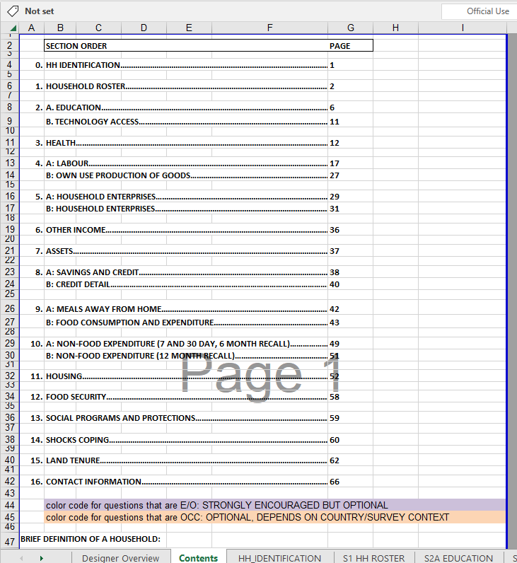

Creating groups (of questions)
Definitions
What do we mean by “groups” ?
Sections

What do we mean by “groups” ?
Sections
Sub-sections
TODO: need image of sub-sections example on paper
Sections
How they look on paper
How they look on paper
TODO: TODO: content here
How they look in CAPI
TODO: Image of TOC in Designer
TODO: Image or video (ideally) of TOC in Interviewer
One is system-generated
TODO: image of cover page section
- Section like any other
- With two exeptions:
- Cannot be deleted
- Questions here appear as ID vars
How to create
TODO: content here
- Click on
- Click on ADD NEW SECTION
- Provide attributes
- Title
- Variable name (optional)
- Enabling condition (optional)
How to make the title better
Make it short
Consider emojis
Make it short
TODO: content here
Principles
- Consider form factor
- Consider function
Practices
- Check whether it fits in UI
- Navigation bar
- Title bar
Consider emojis
TODO: content here
- Communicate
- Check whether it works
How to put questions in sections
Add them
Move them
Add them
TODO: content here
- Open a section
- Create a question inside
- Either
ADD A QUESTIONor - Right click and select
Add question after
- Either
Move them
TODO: content here
- Click on the target question
- Scroll to the bottom of the right-hand panel
- Click on
MOVE TO - Select the destination section
Sub-sections
How they look on paper
TODO: content here
How they look on paper
TODO: content here
How they look in CAPI
TODO: content here
TODO: content here
How to create
TODO: content here
- Either click on
ADD SUB-SECTION - Or right-click and select
Add sub-sectionafter
How to put questions in sub-sections
Add them there
Move them there
Add them there
TODO: content here
- Right-click on question in sub-section
- Select
Add question after
Move them there
TODO: content here
- Hover over the left-hand part of the question
- Drag near the desired sub-section
- Drag to the right under the sub-section
- Confirm that the question is indented under the sub-section